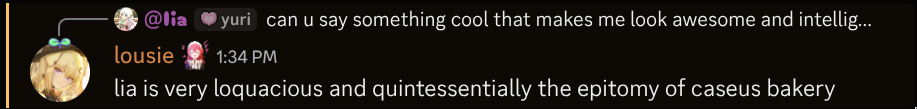

achtung! page made for schoolwork. go to index for relevant information about me
available until 2026-06-21
Utilize email para contato.
chaves pgp. Não utilizo keyservers, compartilhe a sua chave comigo por outra maneira
github. Geralmente utilizo meu próprio servidor git para hostear repositórios
Não utilizo mídias sociais
Meu nome é Lia
Falo Inglês (C1), Português (Nativo) e espanhol
Estudo ciência da computação
Gosto de desenvolvimento e administração de sistemas. Tenho experiência com administração de servidores Linux, networking e práticas de segurança
Desenvolvo software em C e Rust
vps com webradio (streaming de musica), seedbox, servidor git... para uso pessoal
Não sei fazer slides
Sei utilizar os coreutils para administração de sistemas, assim como ferramentas populares como ufw, ssh, ecossistema systemd e linguagens de scripting como BASH.
Sei escrever código eficiente e memory safe em rust, talvez em C; assim como contribuir para e construir software open source utilizando git
